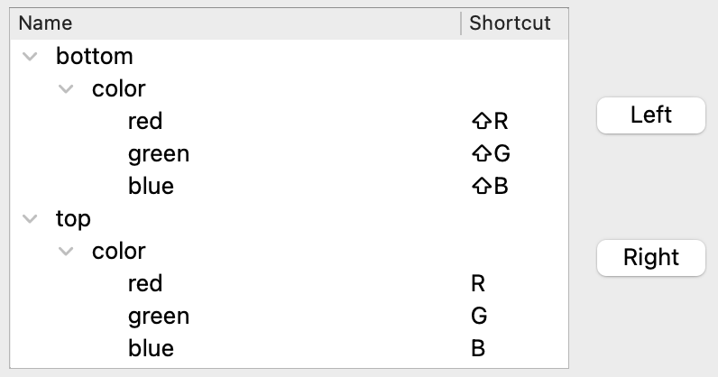
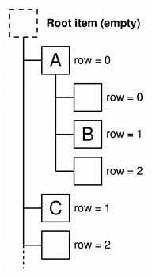

Shortcut Editor Example
The Shortcut Editor example shows how to create a basic, read-write hierarchical model to use with Qt's standard view and QKeySequenceEdit classes. For a description of Model/View Programming, see the Model/View Programming overview.

Qt's model/view architecture provides a standard way for views to manipulate information in a data source, using an abstract model of the data to simplify and standardize the way it is accessed. The shortcut editor model represents the actions as a tree of items, and allow views to access this data via an index-based system. More generally, models can be used to represent data in the form of a tree structure by allowing each item to act as a parent to a table of child items.
Design and Concepts
The data structure that we use to represent the structure of the data takes the form of a tree built from ShortcutEditorModelItem objects. Each ShortcutEditorModelItem represents an item in a tree view, and contains two columns of data.
|  | Shortcut Editor Structure The data is stored internally in the model using ShortcutEditorModelItem objects that are linked together in a pointer-based tree structure. Generally, each ShortcutEditorModelItem has a parent item, and can have a number of child items. However, the root item in the tree structure has no parent item and it is never referenced outside the model. Each ShortcutEditorModelItem contains information about its place in the tree structure; it can return its parent item and its row number. Having this information readily available makes implementing the model easier. Since each item in a tree view usually contains several columns of data (a name and a shortcut in this example), it is natural to store this information in each item. For simplicity, we will use a list of QVariant objects to store the data for each column in the item. |
The use of a pointer-based tree structure means that, when passing a model index to a view, we can record the address of the corresponding item in the index (see QAbstractItemModel::createIndex()) and retrieve it later with QModelIndex::internalPointer(). This makes writing the model easier and ensures that all model indexes that refer to the same item have the same internal data pointer.
With the appropriate data structure in place, we can create a tree model with a minimal amount of extra code to supply model indexes and data to other components.
ShortcutEditorModelItem Class Definition
The ShortcutEditorModelItem class is defined as follows:
The class is a basic C++ class. It does not inherit from QObject or provide signals and slots. It is used to hold a list of QVariants, containing column data, and information about its position in the tree structure. The functions provide the following features:
- The
appendChildItem()is used to add data when the model is first constructed and is not used during normal use. - The
child()andchildCount()functions allow the model to obtain information about any child items. - Information about the number of columns associated with the item is provided by
columnCount(), and the data in each column can be obtained with the data() function. - The
row()andparent()functions are used to obtain the item's row number and parent item.
The parent item and column data are stored in the parentItem and itemData private member variables. The childItems variable contains a list of pointers to the item's own child items.
ShortcutEditorModel Class Definition
The ShortcutEditorModel class is defined as follows:
class ShortcutEditorModel : public QAbstractItemModel { Q_OBJECT class ShortcutEditorModelItem { public: explicit ShortcutEditorModelItem(const QList<QVariant> &data, ShortcutEditorModelItem *parentItem = nullptr); ~ShortcutEditorModelItem(); void appendChild(ShortcutEditorModelItem *child); ShortcutEditorModelItem *child(int row) const; int childCount() const; int columnCount() const; QVariant data(int column) const; int row() const; ShortcutEditorModelItem *parentItem() const; QAction *action() const; private: QList<ShortcutEditorModelItem *> m_childItems; QList<QVariant> m_itemData; ShortcutEditorModelItem *m_parentItem; }; public: explicit ShortcutEditorModel(QObject *parent = nullptr); ~ShortcutEditorModel() override; QVariant data(const QModelIndex &index, int role = Qt::DisplayRole) const override; Qt::ItemFlags flags(const QModelIndex &index) const override; QVariant headerData(int section, Qt::Orientation orientation, int role = Qt::DisplayRole) const override; QModelIndex index(int row, int column, const QModelIndex &parent = QModelIndex()) const override; QModelIndex parent(const QModelIndex &index) const override; int rowCount(const QModelIndex &index = QModelIndex()) const override; int columnCount(const QModelIndex &index = QModelIndex()) const override; bool setData(const QModelIndex &index, const QVariant &value, int role = Qt::EditRole) override; void setActions(); private: void setupModelData(ShortcutEditorModelItem *parent); ShortcutEditorModelItem *m_rootItem; };
This class is similar to most other subclasses of QAbstractItemModel that provide read-write models. Only the form of the constructor and the setupModelData() function are specific to this model. In addition, we provide a destructor to clean up when the model is destroyed.
ShortcutEditorModel Class Implementation
The constructor takes an argument containing the data that the model will share with views and delegates:
ShortcutEditorModel::ShortcutEditorModel(QObject *parent) : QAbstractItemModel(parent) { m_rootItem = new ShortcutEditorModelItem({tr("Name"), tr("Shortcut")}); }
It is up to the constructor to create a root item for the model. This item only contains vertical header data for convenience. We also use it to reference the internal data structure that contains the model data, and it is used to represent an imaginary parent of top-level items in the model.
The model's internal data structure is populated with items by the setupModelData() function. We will examine this function separately at the end of this document.
The destructor ensures that the root item and all of its descendants are deleted when the model is destroyed:
ShortcutEditorModel::~ShortcutEditorModel() { delete m_rootItem; }
Since we cannot add data to the model after it is constructed and set up, this simplifies the way that the internal tree of items is managed.
Models must implement an index() function to provide indexes for views and delegates to use when accessing data. Indexes are created for other components when they are referenced by their row and column numbers, and their parent model index. If an invalid model index is specified as the parent, it is up to the model to return an index that corresponds to a top-level item in the model.
When supplied with a model index, we first check whether it is valid. If it is not, we assume that a top-level item is being referred to; otherwise, we obtain the data pointer from the model index with its internalPointer() function and use it to reference a TreeItem object. Note that all the model indexes that we construct will contain a pointer to an existing TreeItem, so we can guarantee that any valid model indexes that we receive will contain a valid data pointer.
void ShortcutEditorModel::setActions() { beginResetModel(); setupModelData(m_rootItem); endResetModel(); }
Since the row and column arguments to this function refer to a child item of the corresponding parent item, we obtain the item using the TreeItem::child() function. The createIndex() function is used to create a model index to be returned. We specify the row and column numbers, and a pointer to the item itself. The model index can be used later to obtain the item's data.
The way that the TreeItem objects are defined makes writing the parent() function easy:
QModelIndex ShortcutEditorModel::index(int row, int column, const QModelIndex &parent) const { if (!hasIndex(row, column, parent)) return QModelIndex(); ShortcutEditorModelItem *parentItem; if (!parent.isValid()) parentItem = m_rootItem; else parentItem = static_cast<ShortcutEditorModelItem*>(parent.internalPointer()); ShortcutEditorModelItem *childItem = parentItem->child(row); if (childItem) return createIndex(row, column, childItem); return QModelIndex(); }
We only need to ensure that we never return a model index corresponding to the root item. To be consistent with the way that the index() function is implemented, we return an invalid model index for the parent of any top-level items in the model.
When creating a model index to return, we must specify the row and column numbers of the parent item within its own parent. We can easily discover the row number with the TreeItem::row() function, but we follow a convention of specifying 0 as the column number of the parent. The model index is created with createIndex() in the same way as in the index() function.
The rowCount() function simply returns the number of child items for the TreeItem that corresponds to a given model index, or the number of top-level items if an invalid index is specified:
QModelIndex ShortcutEditorModel::parent(const QModelIndex &index) const { if (!index.isValid()) return QModelIndex(); ShortcutEditorModelItem *childItem = static_cast<ShortcutEditorModelItem*>(index.internalPointer()); ShortcutEditorModelItem *parentItem = childItem->parentItem(); if (parentItem == m_rootItem) return QModelIndex(); return createIndex(parentItem->row(), 0, parentItem); }
Since each item manages its own column data, the columnCount() function has to call the item's own columnCount() function to determine how many columns are present for a given model index. As with the rowCount() function, if an invalid model index is specified, the number of columns returned is determined from the root item:
int ShortcutEditorModel::rowCount(const QModelIndex &parent) const { ShortcutEditorModelItem *parentItem; if (parent.column() > 0) return 0; if (!parent.isValid()) parentItem = m_rootItem; else parentItem = static_cast<ShortcutEditorModelItem*>(parent.internalPointer()); return parentItem->childCount(); }
Data is obtained from the model via data(). Since the item manages its own columns, we need to use the column number to retrieve the data with the TreeItem::data() function:
int ShortcutEditorModel::columnCount(const QModelIndex &parent) const { if (parent.isValid()) return static_cast<ShortcutEditorModelItem*>(parent.internalPointer())->columnCount(); return m_rootItem->columnCount(); }
Note that we only support the DisplayRole in this implementation, and we also return invalid QVariant objects for invalid model indexes.
We use the flags() function to ensure that views know that the model is read-only:
QVariant ShortcutEditorModel::data(const QModelIndex &index, int role) const { if (!index.isValid()) return QVariant(); if (role != Qt::DisplayRole && role != Qt::EditRole) return QVariant(); ShortcutEditorModelItem *item = static_cast<ShortcutEditorModelItem*>(index.internalPointer()); return item->data(index.column()); }
The headerData() function returns data that we conveniently stored in the root item:
Qt::ItemFlags ShortcutEditorModel::flags(const QModelIndex &index) const { if (!index.isValid()) return Qt::NoItemFlags; Qt::ItemFlags modelFlags = QAbstractItemModel::flags(index); if (index.column() == static_cast<int>(Column::Shortcut)) modelFlags |= Qt::ItemIsEditable; return modelFlags; }
This information could have been supplied in a different way: either specified in the constructor, or hard coded into the headerData() function.
QVariant ShortcutEditorModel::headerData(int section, Qt::Orientation orientation, int role) const { if (orientation == Qt::Horizontal && role == Qt::DisplayRole) { return m_rootItem->data(section); } return QVariant(); }
TODO
void ShortcutEditorModel::setupModelData(ShortcutEditorModelItem *parent) { ActionsMap actionsMap; Application *application = static_cast<Application *>(QCoreApplication::instance()); ActionManager *actionManager = application->actionManager(); const QList<QAction *> registeredActions = actionManager->registeredActions(); for (QAction *action : registeredActions) { QString context = actionManager->contextForAction(action); QString category = actionManager->categoryForAction(action); actionsMap[context][category].append(action); } QAction *nullAction = nullptr; const QString contextIdPrefix = "root"; // Go through each context, one context - many categories each iteration for (const auto &contextLevel : actionsMap.keys()) { ShortcutEditorModelItem *contextLevelItem = new ShortcutEditorModelItem({contextLevel, QVariant::fromValue(nullAction)}, parent); parent->appendChild(contextLevelItem); // Go through each category, one category - many actions each iteration for (const auto &categoryLevel : actionsMap[contextLevel].keys()) { ShortcutEditorModelItem *categoryLevelItem = new ShortcutEditorModelItem({categoryLevel, QVariant::fromValue(nullAction)}, contextLevelItem); contextLevelItem->appendChild(categoryLevelItem); for (QAction *action : actionsMap[contextLevel][categoryLevel]) { QString name = action->text(); if (name.isEmpty() || !action) continue; ShortcutEditorModelItem *actionLevelItem = new ShortcutEditorModelItem({name, QVariant::fromValue(reinterpret_cast<void *>(action))}, categoryLevelItem); categoryLevelItem->appendChild(actionLevelItem); } } } }
TODO
bool ShortcutEditorModel::setData(const QModelIndex &index, const QVariant &value, int role) { if (role == Qt::EditRole && index.column() == static_cast<int>(Column::Shortcut)) { QString keySequenceString = value.toString(); ShortcutEditorModelItem *item = static_cast<ShortcutEditorModelItem *>(index.internalPointer()); QAction *itemAction = item->action(); if (itemAction) { if (keySequenceString == itemAction->shortcut().toString(QKeySequence::NativeText)) return true; itemAction->setShortcut(keySequenceString); } Q_EMIT dataChanged(index, index); if (keySequenceString.isEmpty()) return true; } return QAbstractItemModel::setData(index, value, role); }
TODO
Setting Up the Data in the Model
We use the setupModelData() function to set up the initial data in the model. This function retrieves the registered actions text and creates item objects that record both the data and the overall model structure. Naturally, this function works in a way that is very specific to this model. We provide the following description of its behavior, and refer the reader to the example code itself for more information.
To ensure that the model works correctly, it is only necessary to create instances of ShortcutEditorModelItem with the correct data and parent item.